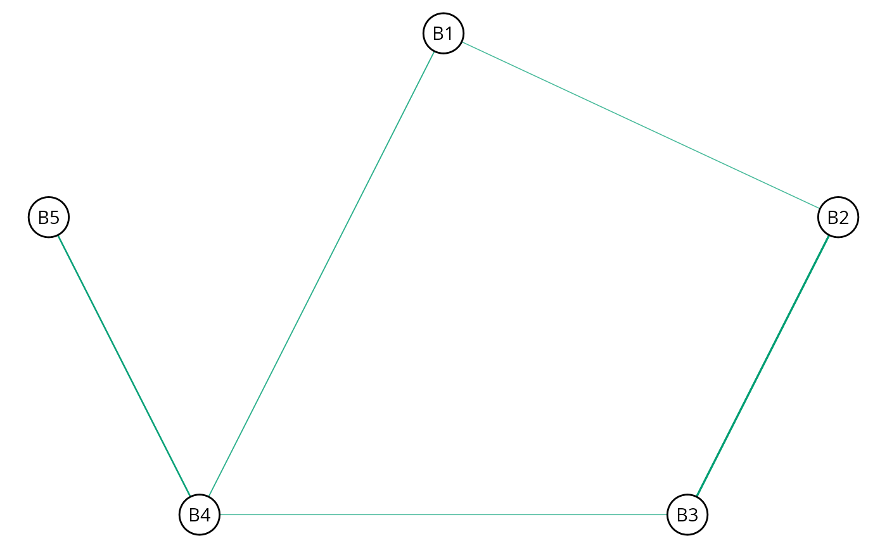

Estimation and exploratory hypothesis testing with missing data.
Arguments
- x
An object of class
midmice.- iter
Number of iterations for each imputed dataset (posterior samples; defaults to 2000).
- method
Character string. Which method should be used (default set to
estimate)? The current options are"estimate"and"explore".- ...
Note
Currently, BGGM is compatible with the package mice for handling
the missing data. This is accomplished by fitting a model for each imputed dataset
(i.e., more than one to account for uncertainty in the imputation step) and then pooling
the estimates.
In a future version, an additional option will be added that allows for
imputing the missing values during model fitting. This option will be incorporated directly into
the estimate or explore functions, such that bggm_missing will
always support missing data with mice.
Support:
There is limited support for missing data. As of version 2.0.0, it is possible to
determine the graphical structure with either estimate or explore, in addition
to plotting the graph with plot.select. All data types are currently supported.
Memory Warning: A model is fitted for each imputed dataset. This results in a potentially large object.
Examples
# \donttest{
# note: iter = 250 for demonstrative purposes
# need this package
library(mice, warn.conflicts = FALSE)
# data
Y <- ptsd[,1:5]
# matrix for indices
mat <- matrix(0, nrow = 221, ncol = 5)
# indices
indices <- which(mat == 0, arr.ind = TRUE)
# Introduce 50 NAs
Y[indices[sample(1:nrow(indices), 50),]] <- NA
# impute
x <- mice(Y, m = 5, print = FALSE)
#########################
####### copula #####
#########################
# rank based parital correlations
# estimate the model (following code commented due to CRAN checks)
fit_est <- bggm_missing(x,
method = "estimate",
type = "mixed",
iter = 250,
progress = FALSE)
# select edge set
E <- select(fit_est)
# plot E
plt_E <- plot(E)$plt
plt_E

# }